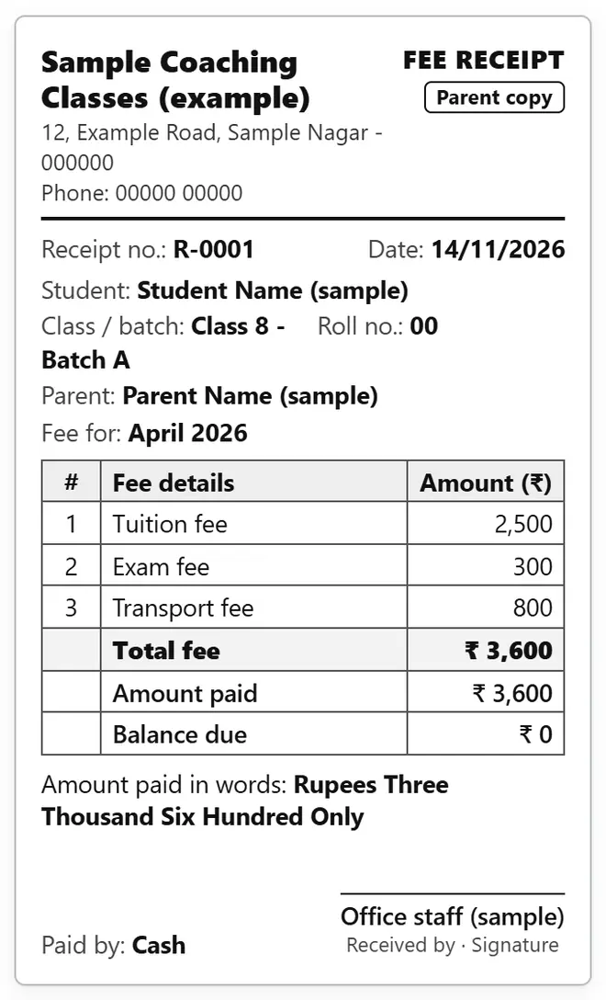

Fee receipt format for school, coaching and tuition: make one for free
Parents ask for a receipt, and a tutor or a small school needs a record of every payment. You do not need a printed receipt book. Fill in a short form, and the app adds up the fees, writes the amount in words and prints an office copy and a parent copy on one A4 page.
Short answer
Open Fee Receipt Maker and type the name of your school or class, the student's name and the fees. Fill in “Concession (₹)” or “Late fee (₹)” if needed and choose “Paid by”. Press “Print / Save as PDF”: the A4 page has two copies, with a line to cut.
A fee receipt in 5 steps
-
Add the details of your school or class
Open Fee Receipt Maker. It opens with sample data. Type the name of the school, coaching class or tutor, the address and a phone number, and add a logo if you have one. These are remembered on this device for the next receipt.
-
Fill in the receipt and the student
Check the receipt number and the date, and type the month or term that the fee is for. Add the student's name, class or batch, roll number and the parent's name.
-
Add the fees
Type the amount for each fee, such as tuition fee, exam fee or transport fee. You can change the name of a row, and “Add a fee row” gives one more row. Fill in “Concession (₹)” or “Late fee (₹)” if there is any. The total is worked out for you.

Fee rows, concession, late fee and payment. -
Record the payment
If only a part of the fee is paid, type it in “Amount paid (₹)” and the receipt shows the balance due. Leave it empty if the full amount is paid. Under “Paid by” choose cash, UPI, bank transfer, cheque or card, and add the UPI or cheque number and the name of the person who received the money.
-
Print, save and make the next receipt
Press “Print / Save as PDF” and choose A4 paper, or Save as PDF to send it on WhatsApp. Cut the page on the dotted line, sign both copies, keep the office copy and give the other one to the parent. “New receipt” starts the next receipt with the next number.

The fee receipt, ready to print.
What a fee receipt should show
- The name and address of the school or class, a receipt number and the date.
- The student's name and class, and the month or term that the fee is for.
- Each fee with its amount, any concession or late fee, the amount paid in figures and in words, and the balance if there is one.
- How the fee was paid, who received it, and a signature. The app does not sign or stamp the receipt: sign the printed copy, and add your stamp if you use one.
Get new free tools and Hindi AI lessons
Join our email list to hear about new free apps, new guides and Hindi video lessons on AI. No spam.
For adults (18+). You can unsubscribe at any time.
Why we recommend these tools
- Free for everyone: no ads, no sign-up and no paid plan.
- Private: your files and details stay on your own device.
- Works on a phone, laptop or smartboard, and offline once opened.
- Available in 12 languages, including Hindi.
Prefer video? Watch free Hindi lessons on AI and free tools on our YouTube channel.
Frequently asked questions
What is the format of a fee receipt?
The name of the school or class at the top, the receipt number and date, the student's details, a table of fees and amounts, the total, the amount paid in words, how it was paid, and the signature of the person who received it.
Can a home tutor or a coaching class use it?
Yes. Type your own name or the name of your class in place of the school name. It works for schools, coaching classes, home tuition and music or hobby classes.
Does it keep a record of the receipts?
Yes. When you press “Save receipt” or print, the receipt is kept in this browser on your device. “Download CSV” gives a file for Excel or Google Sheets with all the fees collected. Keep that file as a backup, because saved receipts go away if the browser data is cleared.
Is a receipt made here valid?
A receipt is your own record that you received the money. The details must be true, and it needs your signature. If a parent needs the receipt for a tax claim or for an office, they should ask there what is required. This guide is not tax advice.
Can I make the receipt in Hindi or in English?
The receipt is in the language of the app, with the amount in words in that language. If you use the app in another language and want an English receipt, tick “Make the receipt in English”.
Found this useful?
Send it to a friend, your colleagues or your school's WhatsApp group.